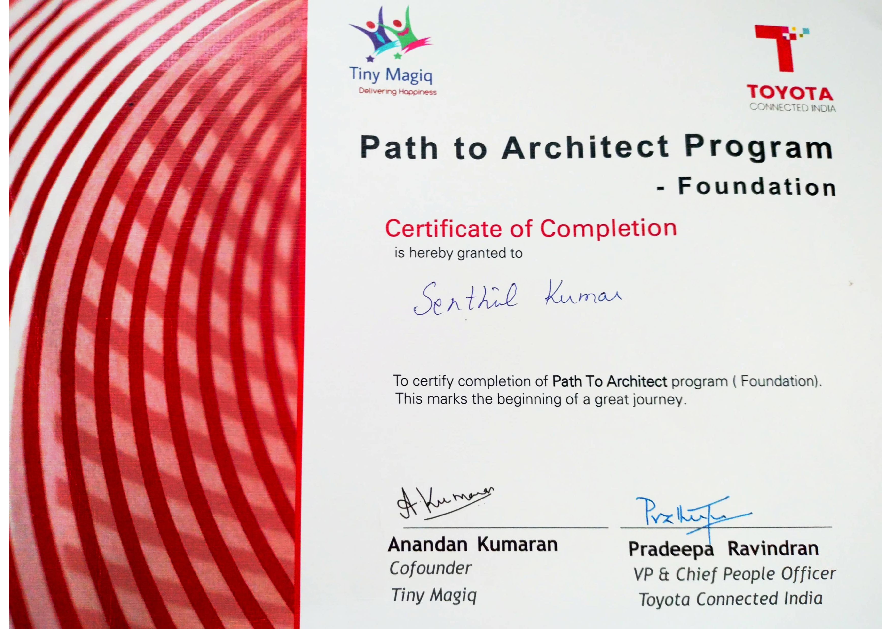

I attended a 2-day workshop conducted by my company Toyota Connected India and TinyMagiq CoFounder Anandan Kumaran in Feb’26.
These are my learning notes to my future self and for all my readers.
I have updated the notes with my own research and experiences as well

Agenda
- I. What is Software Architecture - A Set of Hedging Techniques
- The Five-Pillar Lens of Architecture Decisions
- Where do you stand as an Architect? - The Leadership matrix, Explorer Reset, and the HIPPO effect
- Translating technical bets into business language
- V. A Few More Frameworks to fine-tune Architecture Thinking
- Closing thoughts
I. The First Princples Thinking: What is Software Architecture?
- The answer lies in the answer to two further drill down questions:
- Is the idea worth building?
- If built, how do we survive wrong decisions?
- v1: Architecture is the set of design decisions that must be made early in a project
- v2: Architecture is the way the highest level of components of a system are wired together.
- v3: *Architecture thinking helps in recognizing the most important elements that are likely to result in serious problems, should they not be controlled
- Sources: Martin Fowler’s Architecture Blog and Martin Fowler - What is Architecture
- My personal Definition:
- Architecture is a set of “Hedging techniques/strategies” when building a software
II. Architectural Thinking = Hedging Strategies
A good quote from the Workshop by Anandan Kumaran: * Engineering places the bet. Architecture hedges the bet. * Engineering commits to a solution. Architecture assumes uncertainty and creates fallback paths.
Part 1 - Upstream to Architecture Decisioning: Is the idea worth building?
flowchart LR
A[Idea] --> B["Minimum Viable Effort<br>(smallest whole effort)"]
B --> C{"Signal"}
C -->|Happy or Money| D[Worth Building]
C -->|Loss or None| E[Stop or Reframe]- A Minimum Viable Effort (MVE - a word play on MVP; MVE could be considered a subset of MVP) sits upstream of architecture. It reduces the size of the bet.
- MVE could be defined as: the absolute smallest action/step that can give a signal.
- In Agile Project Management world, it could be similar to a spike story
Part 2 - During Architecture Decisioning: If we build it, how do we survive being wrong?
flowchart LR
D[Worth Building] --> G[Architectural Decisioning]
G -->|Commit| H["Engineering<br>build the solution"]
G -->|Design safety| I["Hedges<br>options, fallback, rollback"]
H --> J{"Production reality"}
J -->|Good| K[Proceed]
J -->|Backfired| L["Automatic Rollback<br>previous good state"]- Architecture then reduces the blast radius of the bet.
- Engineering executes the bet once it is worth taking.
Surviving Wrong Decision: (1) Blue-Green Deployment
Blue-green deployment is architectural hedging in its most practical form. Martin Fowler’s original writeup remains the cleanest explanation.
- You deploy a new green version.
- You keep the old blue version alive.
- If reality disagrees with your assumptions, you switch traffic rather than rebuilding under pressure.
flowchart LR
U[Users] --> R[Router]
R --> B[Blue]
R --> G[Green]
G --> D{Issue}
D -->|No| P[Proceed]
D -->|Yes| BSurviving Wrong Decision: (2) Canary Releases & (3) Feature Flags
Not All Risk is the Same Risk
Matching the hedging strategy to the risk: Replicas Handle Failure, Blue-Green Handles Regret
flowchart TB
A{Risk Type}
A --> B[Failure]
A --> C[Regret]
B --> D[Replicas]
D --> E[Capacity]
D --> F[Availability]
C --> G[Blue Green]
G --> H[Old Version]
G --> I[New Version]
G --> J[Traffic Switch]Blue-green is a coarse hedge. We flip all traffic from one full environment to another.
Sometimes we want a smaller, more controlled bet. That is where canary releases and feature flags come in.
In Feature Flags, for certain users, some features are turned ON for testing
In Canary Release, only a certain small section of users are tested first before going fully into new version
flowchart LR
A[Change to ship] --> B{Granularity}
B -->|Whole environment| C[Blue Green]
B -->|Slice of traffic| D[Canary]
B -->|Single feature| E[Feature Flag]Sources: - https://martinfowler.com/bliki/FeatureFlag.html - https://martinfowler.com/bliki/CanaryRelease.html
III. The Five-Pillar Lens of Product / Architecture Decisions
Architecture decisions should be evaluated through five lenses:
- Quality
- Design
- Business
- Engineering
- Human Dynamics
A highly opinionated view (in a way this prioritizes the pillars)
- Business Strategy = Entry Fee before building a product
- Design + Engineering = The compulsory hardwork while building the product
- Human Dynamics = The differentiator
flowchart TB
D[Decision]
D --> Q[Quality]
D --> DE[Design]
D --> B[Business]
D --> E[Engineering]
D --> H[Human Dynamics]
Q --> Q1[Reliability]
Q --> Q2[Recovery]
DE --> D1[Trade-off Options]
DE --> D2[Finding the Seams]
B --> B1[ROI]
B --> B2[Growth]
E --> E1[Delivery]
E --> E2[Automation]
H --> H1[Trust]
H --> H2[Alignment]As Architects, we must think negative:
* No pillar is allowed to “win” silently. Trade-offs across all five must be explicit. * Optimizing one pillar in isolation creates silent debt in another
What Each Pillar Is and Isn’t
flowchart LR
Q["Quality"]
QN -.-> QNE["Quality !=<br>A gate you pass right before launch"]
QI -.-> QIE["Quality =<br>A lifelong property where 90% of cost lives after launch"]
D["Design"]
DN -.-> DNE["Design !=<br>Documentation that describes a system"]
DI -.-> DIE["Design =<br>Keep tomorrow's decisions cheap and reversible"]
B["Business"]
BN -.-> BNE["Business !=<br>A service desk that responds to requests about the Software App"]
BI -.-> BIE["Business =<br>If it cannot be explained in money, it does not get funded"]
E["Engineering"]
EN -.-> ENE["Engg !=<br>Success measured as features delivered"]
EI -.-> EIE["Engg ==<br>Build the machine that builds the system"]
H["Human Dynamics<br>HD"]
HN -.-> HNE["HD !=<br>Being likeable and getting along"]
HI -.-> HIE["HD =<br>Knowing the path to win 'Yes' from stakeholders"]IV. Leadership Matrix and the HIPPO Effect
The workshop describes growth across two dimensions.
- Impact (Self, Team, Org, Industry)
- Archetype (Explorer, Alchemist, Maverick, Oracle)
flowchart TB
I1[Self]
I2[Team]
I3[Org]
I4[Industry]
A1[Explorer]
A2[Alchemist]
A3[Maverick]
A4[Oracle]
I1 --> I2 --> I3 --> I4
A1 --> A2 --> A3 --> A4The most useful insight is the growth model.
Every time impact expands beyond a threshold, an Orcale resets to an Explorer.
stateDiagram-v2
[*] --> Explorer
Explorer --> Alchemist
Alchemist --> Maverick
Maverick --> Oracle
Oracle --> Explorer: Next LevelGrowth is not becoming a bigger expert. Growth is becoming a beginner in a larger arena.
A note on informal power: the HIPPO effect
The workshop makes a strong distinction between formal power and informal power. Formal power comes from a title. Informal power comes from trust, tenure, and perceived seniority.
What formal title offers: The HIPPO effect (Highest Paid Person’s Opinion) is a well-known name for what happens when power overrides evidence.
Why architects should care:
- Data does not automatically win. Room dynamics do.
- A quiet, tenured engineer can veto a decision without saying no.
- A senior leader unfamiliar with the domain can steer a design purely by leaning in.
Architects who track only formal decision-makers miss the actual decision surface. Related reading: Bernard Marr on the HIPPO effect and data-driven decisions.
- Note:
- Personally, I have gained respect and received brickbats countering the HIPPO effect - either by consciously or unintentionally voicing the cons of decisions by people in power
- It is important to read the room before deciding to counter the HIPPO.
V. Translating Bets into Business Language
Architects frequently lose stakeholder support because they stop at technical reasoning. The workshop repeatedly emphasizes business translation.
flowchart TB
A[Technical Decision]
B[ADR]
C[Trade Off]
D[ROI TCO NPV]
E[Run Grow Transform]
F[So What]
G[Executive Story]
A --> B --> C --> D --> E --> F --> GA few of the tools worth knowing in plain terms.
ROI (Return on Investment)
- Simple ratio of gain to cost.
- Formula: (Gain minus Cost) divided by Cost.
- Best for comparing options over a short horizon.
- Weakness: it hides timing. A slow 40 percent return can be worse than a fast 20 percent one. That is where XIRR is used
- Reference: https://www.investopedia.com/terms/r/returnoninvestment.asp.
TCO (Total Cost of Ownership)
- Sum of all direct and indirect costs over the life of a system.
- Includes licensing, infrastructure, operations, support, migration, retirement.
- Best for choosing between systems that look cheap upfront but expensive later, and vice versa.
- Reference: https://www.gartner.com/en/information-technology/glossary/total-cost-of-ownership-tco.
NPV (Net Present Value)
- Value of a future cash flow expressed in today’s money.
- It respects time. A dollar earned in three years is worth less than a dollar earned today.
- Best for long-lived investments where cash flows arrive over years.
- Reference: https://www.investopedia.com/terms/n/npv.asp.
RICE (Reach, Impact, Confidence, Effort)
- A prioritization framework from Intercom’s product team.
(Reach x Impact x Confidence)
-----------------------------
Effort- Reach: how many people are affected in a defined period.
- Impact: how much it affects each person.
- Confidence: how sure the team is about the estimates.
- Effort: person-months of work required.
- Best for comparing initiatives with different sizes and audiences.
- Weakness: it works best for incremental improvements, less well for novel bets where reach is unknowable.
A Few More Frameworks to fine-tune Architecture Thinking
How to Prioritize the Right Tasks
Portfolio Allocation (Run / Grow / Transform) — How should budget be distributed?
- 60% Run (things that keep the “lights on”), 20% Grow (new features), 20% Transform (thought-provoking or trend-breaking innovation).
- Don’t let “Run” eat the entire budget silently.
MoSCoW Prioritization — How do I scope with clarity?
- Must / Should / Could / Won’t.
- Explicit “Won’t” items are as valuable as “Must‑haves” for alignment.
The Holy Trinity (Risk, Cost, Growth) — What do executives actually fund?
- If your pitch doesn’t hit Risk reduction, Cost optimization, or Growth in 30 seconds, you’ve lost.
- Never pitch technology; pitch the solution to a painful business problem.
The “So What?” Test — How do I know if my argument has landed?
- Ask “So what?” repeatedly until you hit a dollar sign or a human consequence.
- If you can’t reach one, the proposal isn’t ready.
Leading vs Lagging Indicators — How do tech metrics connect to business outcomes?
- Tech metrics (uptime, velocity) are leading; business metrics (churn, revenue) are lagging.
- Knowing the leading and lagging indicators help in deciding when to pull the plug to an effort.
Blue Ocean Thinking — How can tech create new market space?
- Don’t just support the business in existing markets (Red Ocean).
- Use technology to find uncontested spaces (Blue Ocean).
*An interesting video from 2024: Nvidia is a market maker; not share taker
ADRs (Architecture Decision Records) — How do I prevent “Why did we do this” debates?
- 20‑minute investment capturing: what we decided, why, and what we traded away.
- “The palest ink beats the best memory.”
Non‑Functional Requirements (The Hidden 90%) — What actually pays the bills?
- Features get glory; NFRs (uptime, security, compliance, performance) determine survival.
- If you don’t define them, production incidents will.
The “People” Quotient in Architects
Crisis as Leadership Moment — What separates senior response from junior response?
- Technical fix is table stakes; leadership response defines reputation.
- Blame processes, not people. Own the narrative.
Principled Negotiation — How do I resolve conflict without politics?
- Separate people from problem; focus on interests, not positions.
- Invent options for mutual gain; insist on objective criteria.
Stakeholder Typology — Who am I dealing with?
- Champion (highly interested in your view),
- Gatekeeper (guarded interest in your view),
- Skeptic (does not believe in your view),
- Bystander (neither believes or nor disagrees - on the fence).
- The 50-30-20 split:
- Ensure you give 50% of your attention to stakeholders highly interested in your work
- 30% of your attention on skeptics
- Gatekeepers and bystanders are most likely to be automatically won over if the majority agrees with you
Formal vs Informal Power — Who really decides?
- Formal = title and org chart; Informal = trust, expertise, track record.
- Treating formal authority as the primary variable is one of the costliest errors.
Some more Thoughts on “Communication”
Three Communication Failures — What kills my message?
- Completeness over clarity is a mistake: Clarity is a gift to the receiver; completeness is comfort for the sender.
Ethos / Logos / Pathos — What makes a pitch persuasive?
- Ethos (credibility), Logos (logic), Pathos (emotional stakes).
- All three must work together; logic alone doesn’t move decisions.
5‑Stage Pitch Architecture — How do I structure a persuasive pitch?
- Burning Problem → Why Now → Proposed Solution → Trade‑off Map → The Ask.
- Skipping stages diminishes persuasive effect proportionally.
The Compelling Close — How do I end a pitch?
- Reconnect to the burning problem, restate the ask simply, then stop talking.
- Silence is where decisions are made.
Closing Thoughts
The journey from engineer to architect is not about drawing larger diagrams.
It is about becoming better at managing uncertainty.
The workshop material repeatedly returns to the same idea:
- Test the idea before committing.
- Make trade-offs explicit.
- Preserve options.
- Design for survivable failure.
- Translate decisions into outcomes.
A final takeaway:
Engineering makes progress possible. Architecture makes progress survivable.